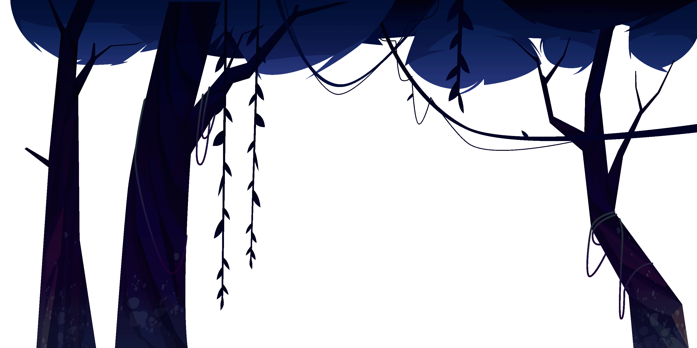
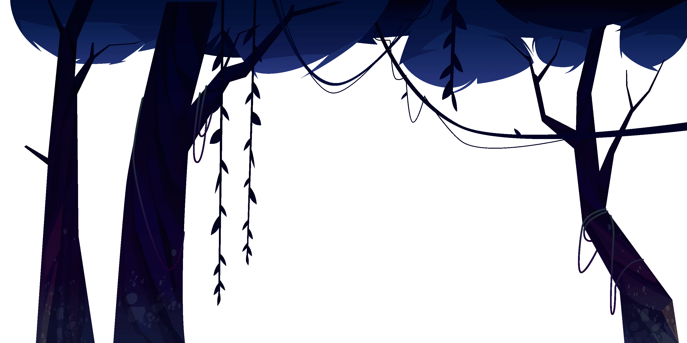

About me
Hello! Welcome to my portfolio! My name is Francesca Bowden and this portfolio to showcase my coursework I have created in my first year of university.
 

Hello! Welcome to my portfolio! My name is Francesca Bowden and this portfolio to showcase my coursework I have created in my first year of university.
I am currently pursuing a degree in Creative Computing at Bath Spa University, UK. Through my coursework, I have gained a strong foundation in programming, my education has provided me with the knowledge and skills necessary to tackle complex web development and software engineering challenges.
My passion for web development and software engineering stems from my fascination with the potential of technology to solve real-world problems and improve lives. I am driven by the opportunity to create innovative solutions that positively impact users and contribute to the advancement of the digital landscape. The constant evolution of the industry fuels my motivation to continuously learn and stay up-to-date with the latest technologies and trends.
I possess a diverse set of technical skills that enable me to excel in web development and software engineering. I am currently learning in programming languages such as JavaScript and C++.
Beyond my academic pursuits, I am passionate about exploring emerging technologies and staying informed about industry trends. I enjoy solving problems and building computers. I enjoy collaborating with like-minded individuals to develop innovative solutions. I also try my best to expand my skill set.
Looking ahead, I am eager to further deepen my expertise in web development, software development and game design. I plan to specialize in backend development to better understand scalable and robust system architecture. I am also keen on pursuing certifications in cloud platforms such as AWS to broaden my skill set and stay ahead in a rapidly evolving field.